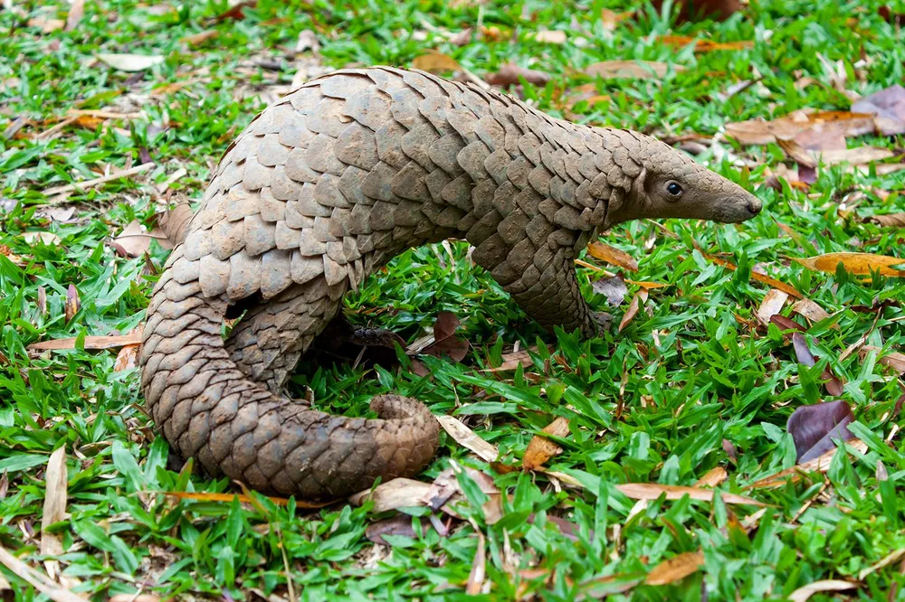

아르마딜로가 아닙니다. 천 산 갑 입니다.
개요
천산갑목에 속하는 동물의 총칭. 이름은 대략 '갑옷 입은 산짐승'을 뜻한다. 능리(鯪鯉)라고도 하며, 학명이자 분류군인 Pholidota는 '비늘로 덮인 것'이라는 뜻이다. 겉보기에 아르마딜로 친척 같지만[5], 의외로 개나 고양이가 포함되는 식육목과 가까운 집단들이다. 유린목과 식육목은 둘 다 상위 분류군으로 광수류에 속한다. 즉 아르마딜로와 닮은 모습은 우연으로 일종의 수렴 진화로 볼 수 있다. 천산갑목에서 살아있는 분류군은 천산갑과 1과에 천산갑속(Manis), 아프리카나무천산갑속(Phataginus), 아프리카땅천산갑속(Smutsia) 총 3속에 8종이다. 이 외에도 여러 분류군이 존재했으나 현대에는 모두 멸종되었다.